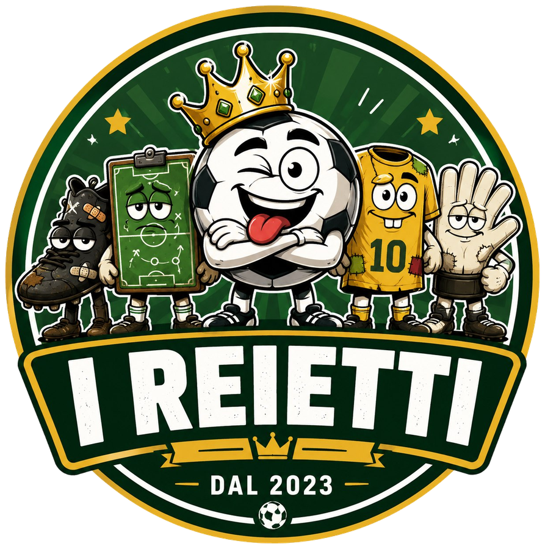

Detentore attuale
In attesa
Caricamento situazione…

I REIETTIStagione 2026/27 Caricamento…La Cintura viene assegnata alla squadra con il fantapunteggio più alto nella giornata appena conclusa. In caso di parità conta la differenza reti. La squadra che ottiene il miglior fantapunteggio mantiene o conquista la Cintura, indipendentemente dallo scontro diretto.
Caricamento situazione…
Nessuna difesa registrata
Top 3 aggiornato automaticamente in base ai risultati caricati in results.csv. A fine campionato, la classifica determina il vincitore stagionale.
| # | Squadra | Difese | Giornate da detentore | Migliori FP | Fantapunti da detentore |
|---|---|---|---|---|---|
| Caricamento classifica… | |||||
Spareggi stagionali: difese valide, giornate complessive da detentore, giornate con il miglior fantapunteggio assoluto e fantapunteggio totale nelle giornate da detentore. Nessun bonus per chi arriva all’ultima giornata da detentore.